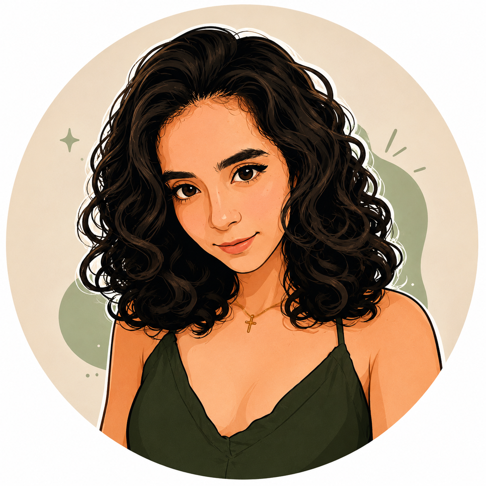

Estúdio próprio · Branding
Davore Studio
Identidade de marca construída do zero — posicionamento, paleta, tipografia e estrutura de serviços para o meu próprio estúdio criativo.

QA Analyst & Graphic Design Student
01 — Sobre
Sou Diana, analista de QA — hoje à frente da qualidade do eFornecedor, sistema de cadastro e gestão de fornecedores dentro do ecossistema SIADES. No dia a dia, isso significa planejar testes, automatizar cenários e garantir que o que foi prometido chegue inteiro até quem usa.
Fora do expediente, construo a Davore Studio, meu estúdio de design e comunicação, e curso Publicidade & Propaganda e Design Gráfico — uma transição deliberada e gradual da engenharia de qualidade para a criação de marcas.
Acredito que qualidade não é só ausência de bugs: é coerência entre o que se promete e o que se entrega. Essa lógica vale tanto para um sistema quanto para uma marca.
02 — Projetos
Estúdio próprio · Branding
Identidade de marca construída do zero — posicionamento, paleta, tipografia e estrutura de serviços para o meu próprio estúdio criativo.
SIADES · QA
Planejamento e automação de testes para um sistema crítico de gestão de fornecedores, com migração de Cypress para Playwright em andamento.
Cliente · Brand Kit
Kit de marca construído a partir de um monograma já existente, com aplicações para papelaria e materiais digitais.
Kelv Gráfica · Freelance
Materiais para mídia impressa e digital sob demanda, do briefing à entrega final.
03 — Experiência
CHANGELOG.md — mais recente primeiro
AZ Tecnologia em Gestão
abr 2026 — atual · Campo Grande, MS (remoto)
AZ Tecnologia em Gestão
out 2025 — abr 2026 · Campo Grande, MS (remoto)
Grupo BMG Foods
abr 2025 — set 2025 · Penápolis, SP
Grupo BMG Foods
mar 2024 — abr 2025 · Penápolis, SP
Kelv Gráfica
set 2023 — dez 2023 · Penápolis, SP
04 — Formação
Graduação
UNINTER — Centro Universitário Internacional
2026 — 2030
em andamentoUNINTER — Centro Universitário Internacional
mai 2026 — mai 2028
em andamentoCertificações
05 — Contato
Tem um projeto, uma vaga ou só quer trocar uma ideia sobre QA e design?
Respondo o quanto antes. Pode escrever sobre testes, sobre marca, ou sobre os dois ao mesmo tempo.